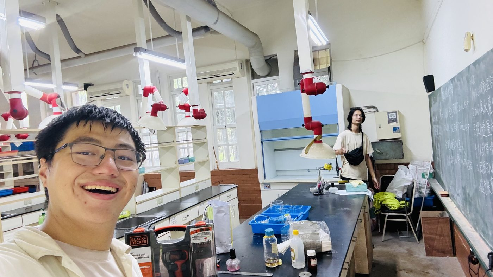

Curriculum vitae
mauricewang1128@gmail.com · +886 931 250 860 · Taipei, Taiwan
Physical assistive robotics for long-term care. I want to build robots that carry out contact-rich care tasks on a bedridden human body — starting with diaper changing, a task that demands three things at once: perceiving a body that will not cooperate, predicting how that body moves when it is touched, and manipulating deformable material safely against skin.
My work so far covers all three. I have built and clinically validated a markerless human motion capture system, written learned dynamics models of musculoskeletal bodies, and measured whether compositional motion priors survive transfer to a robot hand. I am looking for a lab where these can be assembled into a machine that does the task.
National Yang Ming Chiao Tung University, Taipei
On an approved leave of absence, enrollment retained. See Status above for why.
National Yang Ming Chiao Tung University, Taipei
Sole author on all three manuscripts
A self-directed programme on one question: how does an agent acquire a model of a body, and what does that model actually buy? Design, implementation, experiments, statistics and writing done independently. Every result carries adversarial controls and multiple-comparison correction, and the negative findings are reported as findings.
Advisor: Prof. Hui-Ting Shih
Real-time whole-body pose sensing for clinical use — the perception layer a robot working over a bed has to have. I wrote the pipeline, ran the validation experiments, and collected the clinical data myself.
Taoyuan General Hospital · Advisor: Dr. Tso-Jeng Wang
A methods problem disguised as a clinical one: the discriminating feature of a dose trajectory is its shape, but shape is confounded with magnitude and lives on a space that Euclidean clustering gets wrong.
Advisor: Prof. You-Yin Chen
Manuscripts as submitted, all still under revision. None is posted to a preprint server and none is published.
Tamkang High School, New Taipei
Taught the full Grade-8 physical science curriculum to two of the grade's eight classes.

| Languages | Python (advanced), MATLAB (advanced), C/C++ (intermediate) |
| ML / RL | PyTorch, TensorFlow; SAC and Dyna-style model-based RL; policy distillation; world models; CNN/VGG; LSTM |
| Robotics & simulation | MyoSuite; musculoskeletal forward dynamics; Geyer–Herr reflex control; Shadow Hand; inverse kinematics; DLT triangulation; Unreal Engine |
| High-performance computing | CuPy, Numba, multiprocessing, GPU acceleration, CPU affinity and priority tuning |
| Statistics & experiment design | Matched-seed paired-t designs; Holm–Bonferroni with stated family definitions; FDR control; von Mises / directional statistics; bootstrap reproducibility; cluster-robust and conditional logistic regression; adversarial and negative controls; pre-registered checks |
| Systems | PyQt6, SQL, cloud data pipelines, ICD-10 clinical coding |
Ministry of Digital Affairs, Taipei · prize US$1,000
Led a team building the business model and commercialization path for a markerless visible-light motion capture system.
National Chi Nan University, Nantou · prize US$340
Proposed a fall-detection and emotional-gait-recognition model for elderly care.
Led two 3-day service camps in Tamsui and Fenglin combining educational workshops with community service.
50 students across two disciplines.
Built a team of 3 producers and 5 vocalists, designed and built a recording studio, composed and published 13 original songs.